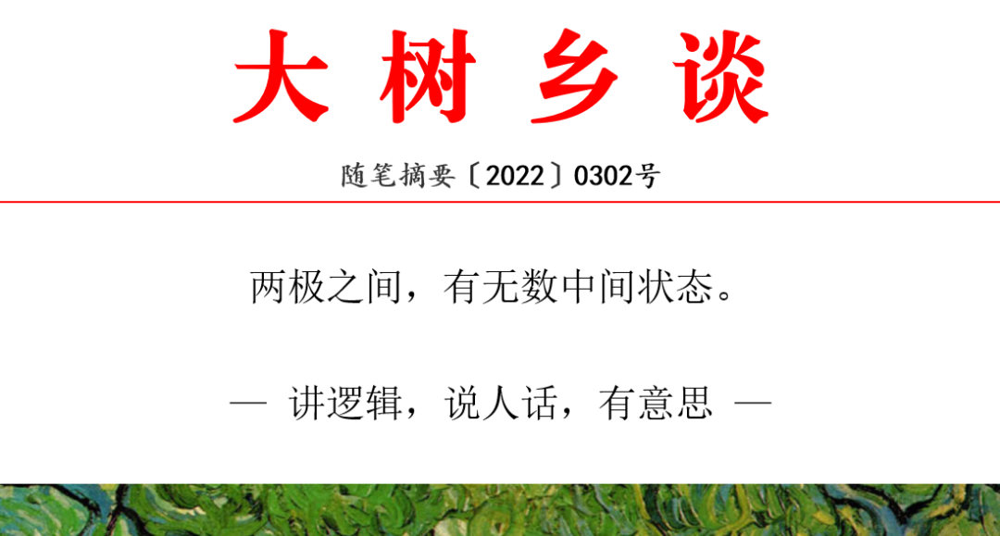

世界不是非黑即白

这几天小镇发了两篇文章，有些朋友不太理解，觉得矛盾了。 在《一个改变普通人命运的大蓝海》，小镇谈了下乡村振兴和农村发展，认为乡村可以为普通人提供大量机遇。为了阐述机会在哪，还推荐了温铁军的一本书：《从农业1.0到农业4.0——生态转型与可持续发展》。 而在《去更有底线的地方》，小镇说大城市、发达的地方不仅机会更多，而且底线更高，更有安全感，还举了乌克兰和丰县的例子。 于是有不少朋友很疑惑，主要有两个疑问：一是到底哪里更有机会？
是大城市还是乡村？觉得小镇的两篇文章矛盾了。二是质疑小镇立场不对，不应该鼓励人们都去大城市，倘若都去了大城市，那谁来发展家乡、谁来乡村振兴？ 不过小镇觉得这两篇完全不矛盾，简单谈三点： 一是国家和个人不同。 对个人不能过于道德绑架，一个人基于自身的能力和优势、倾向，选择不同的生活方式和城市，是他的自由，从概率上，去大城市机会更多，尤其对于普通人，可以更多依靠自己的努力改变命运，这是非常难得的。 贫穷落后地区的发展，当然需要优秀的人才，但不能靠道德绑架，而应该是国家和地方搭台子，不断吸引优秀的人才前来。
二是不同的地方需要的基础不同。 乡村当然是蓝海，但是并不是谁都去了都行，要么在当地有独特资源，要么自己有优势，而对于普通人来说，这种优势往往来自于在城市里的奋斗。 比如TVB拍摄的介绍中国脱贫攻坚成就的纪录片《无穷之路》，第五集介绍了四位带着新思维到广西贫困县开展“电商扶贫”的年轻人，他们运用广州学到的电商运营知识，回乡后打造了“融安金桔”，把土特产升级为品牌农业。这就是典型的例子。 三是修身齐家治国平天下。 国家是由个体组成的，如果一个人把自己和家庭经营好了、不断向上，整个国家自然也会更好。
一个人去了城市扎下了根，发展好了，当他有了余力，也可以投身乡村去做公益、做扶贫，带动更多人富裕。他的后代可以选择待在城市，也可以选择去乡村，这并不矛盾。 世界并不是非黑即白那样极端，同样的例子有太多，比如最近俄乌冲突，关于中国的立场。 小镇在昨天提到的外交部对外口径，有不少朋友留言抱怨为什么外交部说话这么隐晦，为什么不能直接挑明了说支持谁？ 当然不行，事实上外交部说的话已经非常明确了，再明确就不合适了，因为中国的战略利益本就很复杂： 跟俄罗斯背靠背是中国的战略利益，处理好同西方的关系避免被孤立是中国的战略利益，实现国家的统一也是中国的战略利益，维护全球现在的自由贸易体系还是中国的战略利益。 所以，不要太极端，从一极跳到另一极，这中间有无数的中间状态，寻找到那个最有利的中间状态，就是我们所要追求的。
再推荐下温铁军的著作《从农业1.0到农业4.0——生态转型与可持续发展》，在此前文章里小镇认为书中的农业4.0不应该仅仅加入互联网元素，而应该更针对人的本身价值，构建基于人的生态体系。
最近温老调整了他的观点，认为农业4.0是社会化和生态化，温老70多岁了仍然持续学习、不断提升自己，值得每个人学习。
接下来小镇也会结合这本书谈谈乡村问题，尤其谈谈中央一号文。
（说明下：想购买的话可以点击上方链接，也可以去京东搜索，价格都一样）
其他文章推荐
■ 去更有底线的地方
■ 中国的CIPS能否取代美国主导的SWIFT？
如果喜欢，还请点赞、“在看”和关注吧 欢迎分享，让更多人发现“大树乡谈”